3.1 พอลิเมอร์ · ใบเรียนรู้ L01–L08 (ฉบับครบ)
L01–L08 | สิ่งของจริง → โมเลกุล → สมบัติ → การใช้ → สิ่งแวดล้อม
สังเกต • อธิบาย • จด • เปิดเฉลยL01 · วัสดุรอบตัว: เหตุใดจึงเลือกวัสดุต่างกัน?
ลองมองสิ่งของรอบตัวเรา: ขวดน้ำ สายไฟ ถุงพลาสติก และยางรัดของ แม้เป็นของใช้ทั่วไป แต่เลือกวัสดุที่ต่างกัน เพราะสิ่งของแต่ละชนิดต้องทำหน้าที่ไม่เหมือนกัน
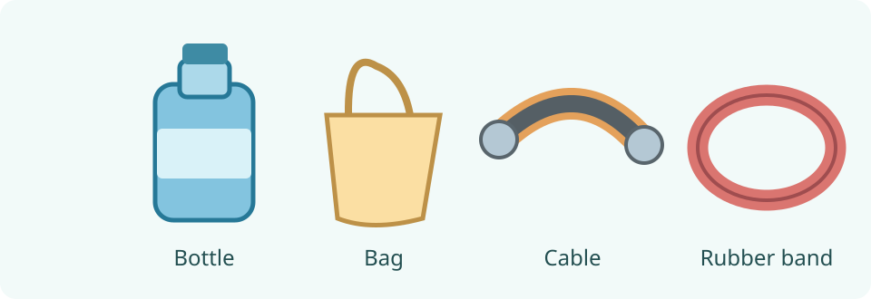
เราตรวจสมบัติของวัสดุได้อย่างไร?
การดูด้วยตาเพียงอย่างเดียวอาจบอกได้ไม่ครบ เราจึงต้องเลือกการทดสอบให้ตรงกับสมบัติที่สนใจ และใช้หลักฐานจากผลการทดลอง
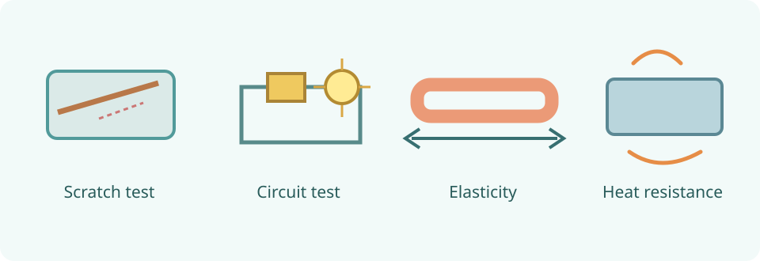
| สมบัติ | หลักการตรวจ |
|---|---|
| Hardness | ใช้วัสดุที่กำหนดขีดผิวแล้วเปรียบเทียบรอยที่เกิดขึ้น |
| Electrical conductivity | ต่อวัสดุเข้ากับวงจรอย่างง่ายที่มีแบตเตอรี่และหลอดไฟ แล้วสังเกตการทำงานของวงจร |
| Elasticity | เปรียบเทียบรูปร่างหรือความยาวก่อนออกแรง ขณะออกแรง และหลังเอาแรงออก |
| Toughness / brittleness | สังเกตการเสียรูปและการแตกหักภายใต้การทดสอบที่เหมาะสม โดยครูควบคุมความปลอดภัย |
| Heat resistance | เปรียบเทียบการเปลี่ยนแปลงของวัสดุเมื่ออยู่ในสภาพร้อนที่กำหนด |
การทดสอบความร้อนและการทำให้วัสดุแตกให้ใช้ข้อมูลหรือการสาธิตที่ครูจัดเตรียม ห้ามเผาพลาสติกหรือสูดดมควันจากพลาสติก
เมื่อเห็นผล เราสรุปอย่างไร?
วงจรที่หลอดไฟติดแสดงว่ามีกระแสไฟฟ้าไหลได้ในสภาพการทดสอบนั้น ส่วนหลอดไม่ติดยังต้องตรวจความสมบูรณ์ของวงจรและความไวของอุปกรณ์ก่อนสรุป
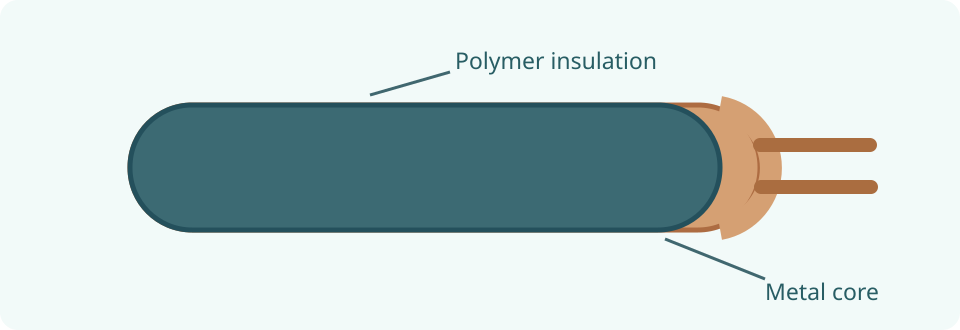
วัสดุพอลิเมอร์จำนวนมากเป็นฉนวนไฟฟ้า แต่ไม่ใช่ทั้งหมด เพราะมีพอลิเมอร์บางชนิดที่นำไฟฟ้าได้ เราจะเรียนเรื่องพอลิเมอร์อย่างละเอียดในช่วงถัดไป
L02 · จากหน่วยย่อยสู่พอลิเมอร์
ถุงพลาสติกกับยางรัดของอาจมีสมบัติไม่เหมือนกัน แต่มีสิ่งหนึ่งร่วมกัน คือวัสดุหลักเป็นพอลิเมอร์ เราจะย่อภาพลงไปถึงระดับโมเลกุลเพื่อทำความเข้าใจคำนี้
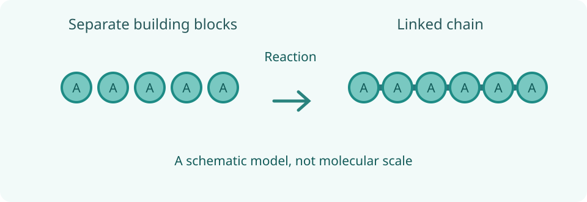
การอยู่ใกล้กันไม่เท่ากับการเกิดพอลิเมอร์
ในการสร้างสายโซ่ ต้องเกิดการเชื่อมต่อทางเคมีระหว่างหน่วยย่อย ไม่ใช่แค่โมเลกุลหลายโมเลกุลวางชิดกันในภาชนะ
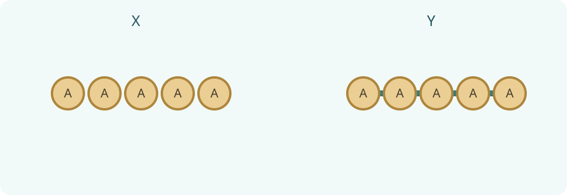
มอนอเมอร์ต้องเป็นชนิดเดียวกันเสมอหรือไม่?
พอลิเมอร์บางชนิดสร้างจากมอนอเมอร์ชนิดเดียว ส่วนบางชนิดสร้างจากมอนอเมอร์ต่างชนิดกันได้ เราจะใช้ภาพเปรียบเทียบเกณฑ์นี้อย่างละเอียดใน L03
ภาพเม็ดกลมเป็นเพียงแบบจำลองการเชื่อมต่อ ไม่ได้บอกขนาดหรือรูปร่างจริงของโมเลกุล และการมีพันธะเคมีคือประเด็นสำคัญของภาพ
L03 · พอลิเมอร์แบ่งประเภทอย่างไร?
เรารู้แล้วว่าพอลิเมอร์ประกอบด้วยหน่วยซ้ำจำนวนมาก แต่การแบ่งประเภทของพอลิเมอร์ต้องบอกก่อนว่าใช้เกณฑ์อะไร ในบทนี้จะใช้สองเกณฑ์ ซึ่งไม่ใช่เรื่องเดียวกัน
แบ่งตามแหล่งกำเนิด
พอลิเมอร์บางชนิดมีอยู่ตามธรรมชาติ เช่น แป้ง เซลลูโลส โปรตีน และยางธรรมชาติ บางชนิดผลิตขึ้นโดยมนุษย์ เช่น พอลิเอทิลีน (PE) ไนลอน และยางสังเคราะห์
10(a). จงจำแนกแป้ง ยางธรรมชาติ PE และไนลอนตามแหล่งกำเนิด
10(b). คำว่า “ธรรมชาติ” หมายความว่า “ย่อยสลายง่ายเสมอ” หรือไม่ อธิบาย
แบ่งตามชนิดของมอนอเมอร์
สมมติว่า A และ B แทนมอนอเมอร์คนละชนิด ให้ดูภาพ P และ Q แล้วพิจารณาว่าแต่ละสายโซ่ใช้มอนอเมอร์กี่ชนิด รูปนี้เป็นสัญลักษณ์เพื่อเรียนรู้ ไม่ใช่สูตรเคมีจริง
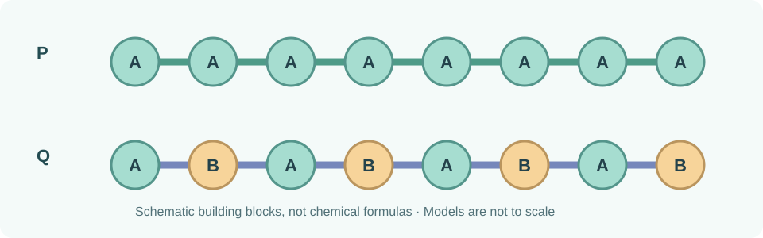
11(a). แบบจำลอง P และ Q แทนโฮโมพอลิเมอร์หรือโคพอลิเมอร์อย่างไร ใช้หลักฐานจากภาพ
11(b). เหตุใดการจำแนกตามแหล่งกำเนิดกับตามชนิดมอนอเมอร์จึงไม่ควรนำมาปนกัน
แป้งเป็นพอลิเมอร์ธรรมชาติและจัดเป็นโฮโมพอลิเมอร์ในระดับที่เรียนนี้ ส่วนยาง SBR เป็นพอลิเมอร์สังเคราะห์และเป็นโคพอลิเมอร์
12. นักเรียนคนหนึ่งบอกว่า “พอลิเมอร์สังเคราะห์ทุกชนิดเป็นโคพอลิเมอร์” จงตรวจและแก้ข้อความนี้
ตัวอย่างเพิ่มเติมที่ควรรู้จากการจำแนกสองเกณฑ์
แป้ง เซลลูโลส และไกลโคเจน เป็นพอลิเมอร์ของหน่วยกลูโคส (จัดเป็นโฮโมพอลิเมอร์ในระดับนี้) ส่วนโปรตีนเป็นสายโซ่ที่ประกอบด้วยกรดอะมิโนได้หลายชนิด จึงเป็นตัวอย่างที่ช่วยเข้าใจพอลิเมอร์จากหน่วยย่อยต่างชนิดกัน ผ้าขนสัตว์และไหมเป็นผลิตภัณฑ์ที่มีโปรตีนเป็นองค์ประกอบสำคัญ
L04 · โครงสร้างของพอลิเมอร์ทำให้สมบัติต่างกันอย่างไร?
คราวนี้เราไม่ได้ดูว่าพอลิเมอร์เกิดจากที่ใด หรือใช้มอนอเมอร์กี่ชนิด แต่ดูว่าหน่วยซ้ำเชื่อมกันเป็นสายโซ่และจัดเรียงอย่างไร โครงสร้างเป็นหนึ่งในปัจจัยที่ทำให้วัสดุมีสมบัติแตกต่างกัน
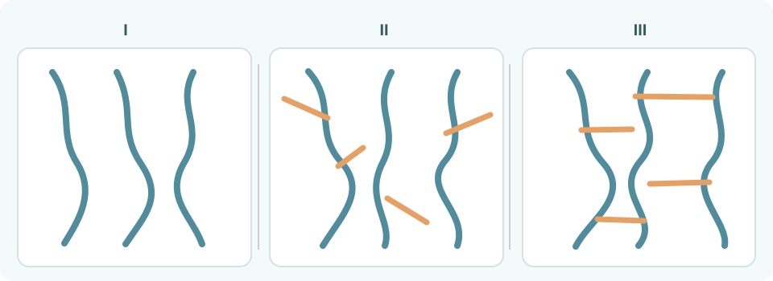
13(a). จากภาพที่ 7 จงจับคู่ I, II, III กับโครงสร้างแบบเส้น แบบกิ่ง และแบบร่างแห
13(b). สังเกตภาพที่ 7 จุดใดทำให้โครงสร้างแบบกิ่งแตกต่างจากแบบร่างแห
เมื่อกิ่งมากขึ้น การจัดเรียงเปลี่ยนอย่างไร?
ลองนึกถึงเชือกหลายเส้นวางในกล่อง หากมีปุ่มยื่นออกมาหลายตำแหน่ง อาจจัดเรียงชิดกันได้ยากขึ้น สำหรับพอลิเอทิลีน (PE) ที่เงื่อนไขอื่นใกล้เคียงกัน สายโซ่ที่แตกกิ่งมากมักจัดเรียงชิดกันได้ยากกว่าแบบที่มีกิ่งน้อย
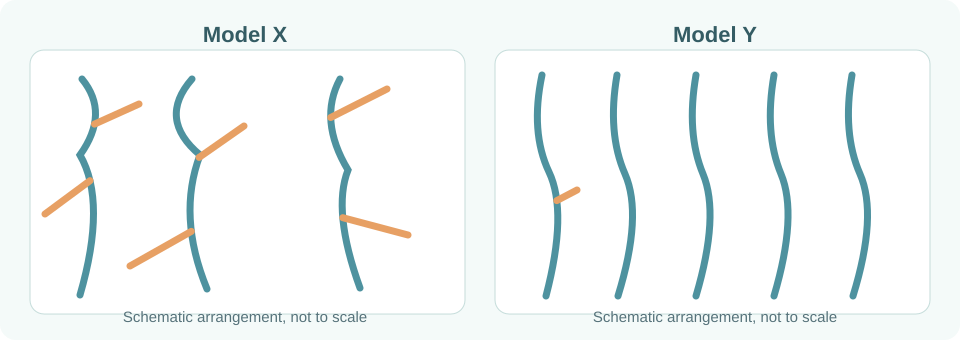
14(a). ภาพที่ 8 แบบจำลอง X หรือ Y มีการแตกกิ่งมากกว่า และภาพใดน่าจัดเรียงชิดกันได้ง่ายกว่า เพราะเหตุใด
HDPE กับ LDPE ต่างกันตรงไหน?
ทั้ง HDPE และ LDPE เป็นพอลิเอทิลีน แต่มีโครงสร้างการแตกกิ่งและการจัดเรียงสายโซ่ต่างกัน โดยทั่วไป HDPE มีการแตกกิ่งน้อยกว่า จัดเรียงได้แน่นกว่า จึงมีความหนาแน่นสูงกว่า LDPE ซึ่งมักแตกกิ่งมากกว่า
14(b). เมื่อเปรียบเทียบ HDPE กับ LDPE ที่เงื่อนไขใกล้เคียงกัน ชนิดใดมีแนวโน้มมีความหนาแน่นสูงกว่า เพราะอะไร
ความแข็งแรง ความยืดหยุ่น และจุดหลอมเหลวของพอลิเมอร์ไม่ได้กำหนดด้วยจำนวนกิ่งอย่างเดียว ยังขึ้นกับชนิดมอนอเมอร์ ความยาวโซ่ การตกผลึก สารเติมแต่ง และสภาพใช้งานด้วย โครงสร้างแบบร่างแหที่เชื่อมขวางมากอาจจำกัดการเคลื่อนที่ของโซ่ แต่ไม่ควรจำว่าทุกร่างแหเปราะเสมอ
15(a). เหตุใดไม่ควรสรุปว่า “พอลิเมอร์แบบร่างแหทุกชนิดต้องเปราะ”
15(b). หากต้องอธิบายความแตกต่างของถุงพลาสติกกับภาชนะที่แข็งขึ้นรูป ให้อธิบายโดยเชื่อมจากโครงสร้างสู่สมบัติ ไม่เดาจากสี
โครงสร้างมีผลต่อการเปลี่ยนรูปร่างเมื่อได้รับความร้อนด้วย เราจะใช้ความรู้นี้แยกเทอร์มอพลาสติกและเทอร์มอเซตในช่วงต่อไป
L05 · พลาสติกทุกชนิดหลอมขึ้นรูปซ้ำได้หรือไม่?
จาก L04 เรารู้ว่าสายโซ่พอลิเมอร์จัดเรียงและเชื่อมต่อกันต่างกัน คำถามต่อไปคือ เมื่อให้ความร้อน วัสดุแต่ละชนิดจะอ่อนตัว คงรูป หรือเสื่อมสภาพเหมือนกันหรือไม่?
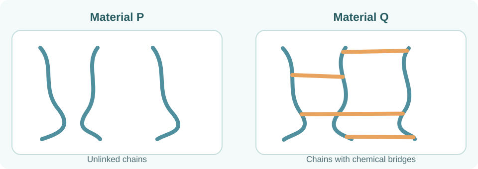
เทอร์มอพลาสติก (Thermoplastic)
เทอร์มอพลาสติกโดยทั่วไปจะอ่อนตัวเมื่อได้รับความร้อนอย่างเหมาะสม และแข็งขึ้นเมื่อเย็นลง จึงนำมาขึ้นรูปใหม่ได้ในกระบวนการที่เหมาะสม พอลิเมอร์ชนิดนี้มักมีสายโซ่แบบเส้นหรือแบบกิ่ง เช่น PE, PP และ PVC
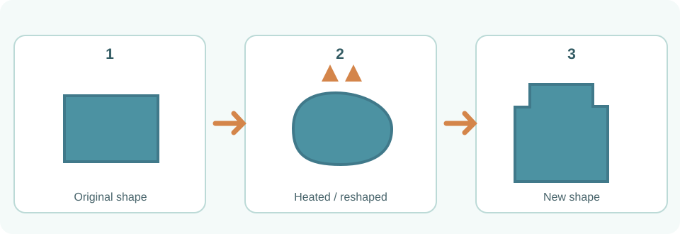
16(a). พอลิเมอร์ชนิดหนึ่งอ่อนตัวเมื่ออุ่นและขึ้นรูปใหม่ได้ หลังเย็นลงจะมีลักษณะใดโดยทั่วไป?
เทอร์มอเซต (Thermoset)
เทอร์มอเซตเป็นพอลิเมอร์ที่มีโครงสร้างเชื่อมขวางเป็นโครงข่าย เมื่อแข็งตัวแล้วไม่สามารถนำกลับมาหลอมและขึ้นรูปซ้ำเหมือนเทอร์มอพลาสติกได้ หากได้รับความร้อนมากเกินไปอาจเสื่อมสภาพหรือสลายตัว ตัวอย่างที่พบได้คือเรซินเมลามีนฟอร์มาลดีไฮด์ในภาชนะบางชนิด
16(b). เพราะเหตุใดพอลิเมอร์ที่เชื่อมขวางเป็นโครงข่ายมากจึงขึ้นรูปใหม่ด้วยความร้อนแบบเทอร์มอพลาสติกไม่ได้?
ตารางเปรียบเทียบสองประเภท
| ประเด็น | Thermoplastic | Thermoset |
|---|---|---|
| โครงสร้างโดยทั่วไป | แบบเส้นหรือแบบกิ่ง | โครงข่ายเชื่อมขวาง |
| เมื่อให้ความร้อนอย่างเหมาะสม | มักอ่อนตัวและขึ้นรูปใหม่ได้ | ไม่หลอมขึ้นรูปซ้ำแบบเดิม |
| ตัวอย่าง | PE, PP, PVC | เรซินเมลามีนฟอร์มาลดีไฮด์ |
17(a). ถ้าเด็กนำช้อนเมลามีนกับขวด PE มาทดลองหลอมใหม่ ควรคาดการณ์การขึ้นรูปซ้ำอย่างไร และมีข้อควรระวังใด?
การรีไซเคิลยังขึ้นกับความสะอาด การคัดแยก สารเติมแต่ง และระบบรับขยะจริง วัสดุเทอร์มอพลาสติกไม่ได้หมายความว่าทุกชิ้นจะถูกรีไซเคิลได้ในพื้นที่ของเรา
17(b). ถุงพลาสติกชนิดหนึ่งอ่อนตัวเมื่อร้อน ข้อสรุปว่า “จึงรีไซเคิลได้แน่นอน” ถูกต้องหรือไม่?
ตัวอย่างเทอร์มอเซตที่พบในสื่อประกอบ
นอกจากเมลามีนฟอร์มาลดีไฮด์ ยังมี เบกาไลต์ (Bakelite) หรือฟีนอลฟอร์มาลดีไฮด์เรซินซึ่งใช้ในชิ้นส่วนฉนวนและด้ามอุปกรณ์บางประเภท รวมทั้งซิลิโคนที่ผ่านการบ่มเป็นโครงข่าย และพอลิยูรีเทน บางสูตร ที่เกิดโครงข่ายเชื่อมขวาง ไม่ควรสรุปว่าซิลิโคนหรือพอลิยูรีเทนทุกสูตรเป็นเทอร์มอเซต เพราะโครงสร้างและการใช้งานแตกต่างกันได้
L06 · เราเลือกพลาสติกให้เหมาะกับหน้าที่ได้อย่างไร?
ขวดน้ำ ท่อประปา ลังพลาสติก โฟม และผิวเคลือบกระทะอาจดูคล้ายเป็นพลาสติก แต่ไม่ได้ทำจากพอลิเมอร์ชนิดเดียวกัน เราต้องดูว่างานนั้นต้องการสมบัติใดก่อนเลือกวัสดุ
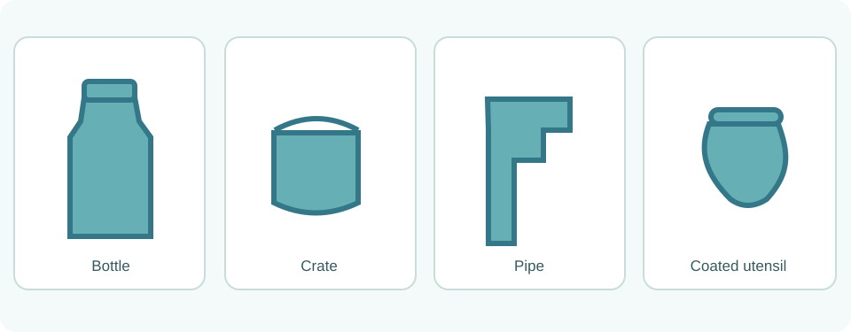
คำที่ใช้บรรยายสมบัติพลาสติก
คำที่มักใช้คือ durable (ทนทาน), lightweight (น้ำหนักเบา), electrical insulator (ฉนวนไฟฟ้า), impermeable (ของเหลวผ่านได้ยาก) และ chemical-resistant (ทนต่อสารเคมีบางชนิด) สมบัติเหล่านี้ไม่ได้พบเท่ากันในพลาสติกทุกชนิด
พอลิเมอร์สำคัญและการใช้ประโยชน์
| ชนิด | สมบัติและตัวอย่างการใช้ |
|---|---|
| PE Polyethylene | เบา ทนทาน น้ำผ่านยาก เป็นฉนวนไฟฟ้า; ตัวอย่าง ถุงพลาสติกและขวดผลิตภัณฑ์บางชนิด |
| PP Polypropylene | เบา ทนทาน ขึ้นรูปได้ พบในลัง ถัง และของใช้บางชนิด |
| PVC Polyvinyl chloride | ใช้ทำท่อและฉนวนสายไฟ สมบัติแข็งหรืออ่อนขึ้นกับสูตรและสารเติมแต่ง |
| PS Polystyrene | ชนิดแข็งค่อนข้างเปราะ; ชนิดโฟมเบาและเป็นฉนวนความร้อน พบในบรรจุภัณฑ์ |
| PTFE Polytetrafluoroethylene | ผิวลื่น ไม่ติดง่าย ทนสารเคมีหลายชนิด ใช้เคลือบภาชนะประกอบอาหารบางประเภท |
| PET Polyethylene terephthalate | เบา แข็งแรงพอเหมาะ และขึ้นรูปเป็นขวดเครื่องดื่มหรือเส้นใยพอลิเอสเตอร์ได้ |
| MF Melamine-formaldehyde resin | เป็นเทอร์มอเซตที่คงรูป ใช้ทำภาชนะบางชนิดตามคำแนะนำผู้ผลิต ไม่ควรใช้เกินขีดจำกัดอุณหภูมิ |
วิธีจำที่ถูกต้องไม่ใช่จำ ‘ชื่อ = ของใช้หนึ่งอย่าง’ แต่ต้องถามว่าวัสดุนั้นตอบโจทย์การใช้งานเพราะสมบัติใด เช่น ท่อควรแข็งแรงและทนการสัมผัสน้ำ ส่วนฉนวนสายไฟต้องนำไฟฟ้าได้ไม่ดี
18(a). เพราะเหตุใด PVC จึงใช้ได้ทั้งท่อแข็งและฉนวนสายไฟที่โค้งงอได้?
18(b). เมื่อเปรียบเทียบ PS แบบแข็งกับโฟม PS นักเรียนควรระวังข้อสรุปใด?
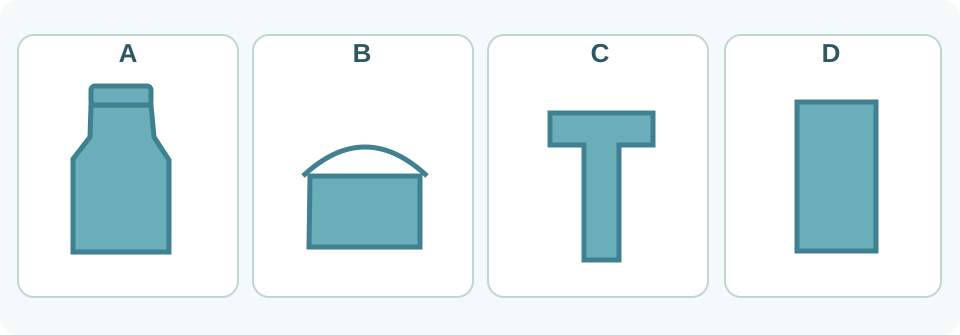
เลือกวัสดุจากเงื่อนไขจริง
การเลือกวัสดุมีขั้นตอน: (1) ระบุหน้าที่ของผลิตภัณฑ์ (2) ระบุสมบัติที่ต้องการ (3) เปรียบเทียบชนิดวัสดุและข้อจำกัด (4) เลือกพร้อมเหตุผล การใช้งานจริงอาจต้องตรวจความปลอดภัยด้านอาหาร อุณหภูมิ และมาตรฐานผลิตภัณฑ์เพิ่มเติม
19(a). จะเลือกวัสดุเคลือบกระทะไม่ติดอาหาร คุณควรพิจารณาสมบัติอะไร และพอลิเมอร์ใดเป็นตัวอย่างที่พบได้?
19(b). ถ้าต้องเลือกวัสดุสำหรับท่อระบายน้ำกับขวดเครื่องดื่ม ทำไมไม่ควรเลือกจากสีหรือราคาอย่างเดียว?
ชนิดของพลาสติกบอกแนวโน้มสมบัติ แต่สมบัติของผลิตภัณฑ์จริงยังขึ้นกับสารเติมแต่ง รูปทรง ความหนา อุณหภูมิ และวิธีผลิต รวมทั้งพลาสติกบางชนิดถูกออกแบบให้นำไฟฟ้าได้ จึงไม่ควรจำว่า 'พลาสติกทุกชนิดเป็นฉนวนเสมอ'
20(a). ข้อความ “พลาสติกทุกชนิดเป็นฉนวนไฟฟ้าและทนความร้อนเท่ากัน” ถูกต้องหรือไม่?
ความรู้ต่อยอดจาก Focus มีพอลิเมอร์บางชนิดที่นำไฟฟ้าได้ ใช้พัฒนาอุปกรณ์อิเล็กทรอนิกส์หรือแบตเตอรี่บางแบบ แต่รายละเอียดอิเล็กตรอนที่กระจายตัวเกินระดับพื้นฐานของบทนี้
พลาสติกไม่ใช่ผลิตภัณฑ์พอลิเมอร์ทั้งหมด ใน L07 เราจะเรียนรู้ยางและเส้นใยที่มีสมบัติและการใช้ประโยชน์แตกต่างกัน
ตารางอ้างอิง: มอนอเมอร์และตัวอย่างผลิตภัณฑ์ที่ควรรู้
ตารางนี้เก็บตัวอย่างจากสื่อประกอบทั้งสามแหล่งไว้สำหรับค้นตอบใบทบทวน ไม่จำเป็นต้องท่องชื่อสารทุกชนิดพร้อมกัน เริ่มจากจำชื่อย่อและสมบัติ แล้วค่อยอ่านมอนอเมอร์เมื่อพบคำถาม
| พอลิเมอร์ | มอนอเมอร์หรือสารตั้งต้น (เปิดเฉลย) | ตัวอย่างผลิตภัณฑ์ |
|---|---|---|
| PE · Polyethylene | เอทีน (เอทิลีน) | ถุงใส่ของเย็น ถุงขยะ ของเล่น ดอกไม้พลาสติก ถุงช็อปปิง ขวดแชมพูบางชนิด |
| PP · Polypropylene | โพรพีน (โพรพิลีน) | ถัง ลัง เฟอร์นิเจอร์พลาสติก และของเล่น |
| PVC · Polyvinyl chloride | ไวนิลคลอไรด์ | ท่อน้ำ ข้อต่อท่อ ฉนวนสายไฟ เสื้อกันฝน กระเบื้องปูพื้น และภาชนะสำหรับสารเคมีบางประเภท |
| PS · Polystyrene | สไตรีน | กล่องใส ตลับเก่า ชิ้นส่วนตู้เย็น โฟมบรรจุภัณฑ์ แผ่นฉนวนกันความร้อน และผลิตภัณฑ์ลอยน้ำ |
| PTFE · Polytetrafluoroethylene | เตตระฟลูออโรเอทีน (เตตระฟลูออโรเอทิลีน) | ผิวเคลือบภาชนะไม่ติดอาหาร ฉนวนไฟฟ้า ปะเก็น และชิ้นส่วนรับแรงเสียดทานที่เหมาะสม |
| PET · Polyethylene terephthalate | เอทิลีนไกลคอลร่วมกับกรดเทเรฟทาลิก หรือไดเมทิลเทเรฟทาเลต | ขวดน้ำดื่ม ขวดน้ำอัดลม เส้นใยพอลิเอสเตอร์ ด้าย แห และอวน |
| MF · Melamine-formaldehyde resin | เมลามีนและฟอร์มาลดีไฮด์ | จาน ชาม ช้อน ตะเกียบ และเครื่องใช้ที่ผลิตสำหรับการสัมผัสอาหารตามข้อกำหนดผู้ผลิต |
ข้อควรจำ: พอลิเมอร์หนึ่งชนิดอาจผลิตเป็นสินค้าได้หลากหลายแบบตามการขึ้นรูปและสารเติมแต่ง เช่น PET อาจเป็นขวดหรือเส้นใย ส่วน PS แบบเนื้อแข็งและแบบโฟมมีลักษณะแตกต่างกัน ของใช้เป็น “ตัวอย่าง” ไม่ใช่หลักฐานพิสูจน์ชนิดพลาสติกจากรูปลักษณ์ภายนอกเพียงอย่างเดียว
L07 · พอลิเมอร์ไม่ได้มีเพียงพลาสติก: ยางและเส้นใย
หลังจากเรียนชนิดของพลาสติก ลองหยิบยางรัดของกับเชือกขึ้นมาเปรียบเทียบ ยางรัดของยืดแล้วกลับมาใกล้ความยาวเดิม แต่เชือกสำหรับรับแรงดึงต้องแข็งแรงและไม่ยืดมากเกินไป ทั้งสองอย่างอาจทำจากพอลิเมอร์ แต่สมบัติที่ต้องการไม่เหมือนกัน
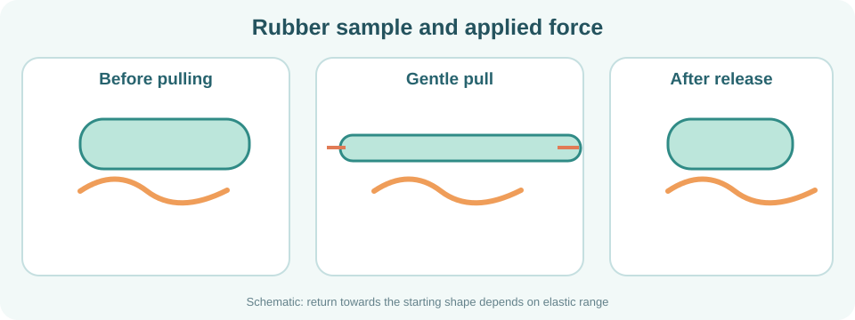
1. ยางและสมบัติสำคัญ
ยางเป็นวัสดุพอลิเมอร์ที่มักยืดและคืนรูปได้เมื่อแรงไม่มากเกินขีดจำกัด สภาพยืดหยุ่นไม่เหมือนความเหนียวหรือความแข็งแรง: ความยืดหยุ่นเน้นการกลับคืนรูป ส่วนความเหนียวเน้นความสามารถในการดูดซับพลังงานก่อนแตกหัก จึงต่างจากความแข็งแรงซึ่งเกี่ยวกับการรับความเค้นก่อนเสียหาย
ยางธรรมชาติได้จากน้ำยางของต้นยางพารา มีพอลิไอโซพรีนเป็นองค์ประกอบหลัก ยางสังเคราะห์ผลิตโดยกระบวนการทางเคมี เช่น ยางสไตรีนบิวทาไดอีน (SBR) และนีโอพรีน (Neoprene) แต่ละชนิดมีสมบัติแตกต่างกันตามสูตรผลิต
| ชนิด | สมบัติหรือที่มา | การใช้งานตัวอย่าง |
|---|---|---|
| Natural rubber | ได้จากน้ำยาง ยืดหยุ่นได้ | ยางรัดและผลิตภัณฑ์ยาง |
| SBR | ยางสังเคราะห์ เหมาะกับการใช้งานที่ต้องทนการสึกหรอบางแบบ | ยางรถยนต์บางสูตร |
| Neoprene | ยางสังเคราะห์ ทนน้ำมันหรือสภาพอากาศได้ดีขึ้นในบางการใช้งาน | สายยางหรือผลิตภัณฑ์ป้องกัน |
ยางสังเคราะห์ไม่ได้ทนน้ำมันทุกชนิด และยางธรรมชาติหรือยางสังเคราะห์ก็ไม่ได้มีความยืดหยุ่นเท่ากันเสมอ การเลือกยางต้องดูชนิด สารเติมแต่ง และเงื่อนไขการใช้งานจริง
การวัลคาไนซ์ (Vulcanisation) เป็นกระบวนการที่ใช้สร้างพันธะเชื่อมขวางบางส่วนในยาง เพื่อปรับสมบัติ เช่น การคืนรูปและความทนทาน ไม่ใช่ว่ายิ่งมีพันธะเชื่อมขวางมากจะยิ่งเหมาะกับงานทุกแบบ
21(a). ทำไมยางรัดของจึงต้องมีสภาพยืดหยุ่น แต่เชือกยกของต้องให้ความสำคัญกับความแข็งแรง?
21(b). เพื่อนบอกว่า “ยางสังเคราะห์ทุกชนิดทนน้ำมันทุกประเภท” ข้อความนี้ถูกต้องหรือไม่?
2. เส้นใย: เลือกให้เหมาะกับเสื้อผ้าและเชือก
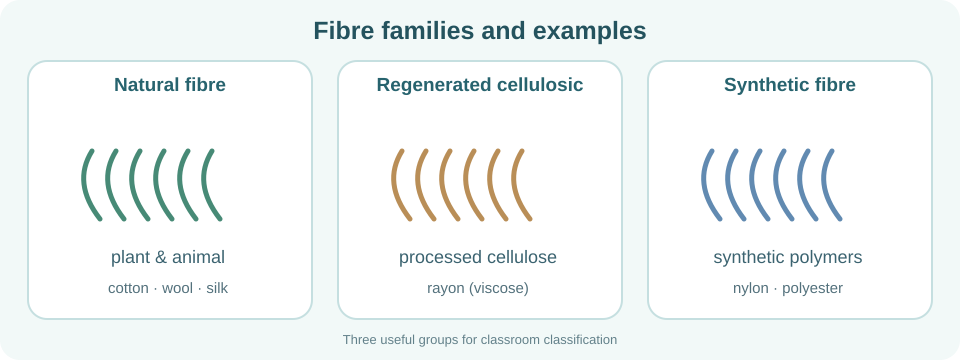
เส้นใย (Fibre) เป็นวัสดุที่มีลักษณะเป็นเส้นเล็กและยาว สามารถนำไปปั่นเป็นเส้นด้ายหรือทอเป็นผ้าได้ เส้นใยธรรมชาติ เช่น ฝ้ายมีเซลลูโลส และขนสัตว์หรือไหมมีโปรตีนเป็นองค์ประกอบสำคัญ
เส้นใยจากเซลลูโลสแปรรูป เช่น เรยอน ผลิตโดยนำเซลลูโลสธรรมชาติมาแปรรูปและสร้างเส้นใยใหม่ ส่วนเซลลูโลสแอซีเตตเป็นเส้นใยกึ่งสังเคราะห์ที่ผ่านการปรับเปลี่ยนทางเคมี เส้นใยสังเคราะห์ เช่น ไนลอนและพอลิเอสเตอร์ ผลิตจากพอลิเมอร์สังเคราะห์
| กลุ่ม | ตัวอย่าง | จุดสังเกต |
|---|---|---|
| ธรรมชาติ | ฝ้าย ขนสัตว์ ไหม | ได้จากพืชหรือสัตว์ |
| เซลลูโลสแปรรูป | เรยอน (เช่น วิสโคส) | ผลิตจากเซลลูโลสธรรมชาติที่นำมาแปรรูป |
| สังเคราะห์ | ไนลอน พอลิเอสเตอร์ | ผลิตจากพอลิเมอร์ที่สังเคราะห์ขึ้น |
เส้นใยแต่ละชนิดมีสมบัติแตกต่างกัน เช่น ฝ้ายมักดูดซับความชื้นได้ดี ขณะที่ไนลอนมีความแข็งแรงและทนต่อการดึงได้ดีในหลายการใช้งาน จึงใช้ทำถุงเท้า เชือก หรือร่มชูชีพบางชนิดตามตัวอย่างใน Focus Smart Plus แต่การเลือกใช้ยังต้องคำนึงถึงสภาพจริงและการออกแบบผลิตภัณฑ์ด้วย
22(a). หากต้องจัดเส้นใยจากฝ้าย เรยอน และไนลอนเป็นสามกลุ่ม จะใช้เกณฑ์อะไร และได้กลุ่มใดบ้าง?
22(b). ทำไมการดูว่าเป็น “เส้นใย” เพียงอย่างเดียว จึงไม่เพียงพอต่อการเลือกใช้ทำเชือกที่รับแรง?
23. เพราะเหตุใดไนลอนกับขนสัตว์จึงจัดอยู่ในกลุ่มเส้นใยต่างกัน แม้ใช้ทำเสื้อผ้าได้ทั้งคู่?
ตารางเสริม: ยางธรรมชาติและยางสังเคราะห์
| ชนิด | มอนอเมอร์และสมบัติเด่น | ผลิตภัณฑ์ตัวอย่าง |
|---|---|---|
| Natural rubber · Polyisoprene | ไอโซพรีน; ยืดหยุ่นได้ในช่วงที่เหมาะสม | ยางรัดของ ถุงมือแพทย์ และผลิตภัณฑ์จากยางธรรมชาติที่เหมาะกับงาน |
| BR · Polybutadiene | บิวทาไดอีน; มีสมบัติช่วยด้านการทนสึกหรอและการคืนรูปในสูตรยางบางประเภท | ยางรถยนต์และยางล้อเครื่องบินบางสูตร |
| SBR · Styrene-butadiene rubber | สไตรีนและบิวทาไดอีน; ใช้ในผลิตภัณฑ์ที่ต้องการความทนสึกหรอ | ยางรถยนต์ พื้นรองเท้า และสายพานบางสูตร |
| Neoprene · Polychloroprene | คลอโรพรีน; ทนน้ำมันบางชนิดและสภาพอากาศได้เหมาะสมในสูตรที่กำหนด | สายยาง ปลอกป้องกัน และของเล่นยางบางประเภท |
ตัวอย่างเส้นใยจากแหล่งกำเนิดต่าง ๆ
| กลุ่ม | ตัวอย่างที่พบในสื่อประกอบ | ประเด็นสำคัญ |
|---|---|---|
| ธรรมชาติจากพืช | ฝ้าย นุ่น ลินิน ป่าน ปอ | ส่วนใหญ่มีเซลลูโลสเป็นองค์ประกอบสำคัญ |
| ธรรมชาติจากสัตว์ | ขนแกะ ขนแพะ ไหม | มีโปรตีนเป็นองค์ประกอบสำคัญ |
| กึ่งสังเคราะห์จากเซลลูโลส | เรยอน (Rayon), เซลลูโลสแอซีเตต (Cellulose acetate) | นำเซลลูโลสธรรมชาติมาแปรรูปหรือดัดแปลง |
| สังเคราะห์ | ไนลอน รวมไนลอน-6,6; พอลิเอสเตอร์ เช่น Dacron/Terylene | ขึ้นรูปจากพอลิเมอร์สังเคราะห์ ใช้ทำเสื้อผ้า ถุงเท้า เชือก แห อวน หรือร่มชูชีพตามสมบัติและการออกแบบ |
ข้อสังเกต: Dacron และ Terylene เป็นชื่อทางการค้าของเส้นใยพอลิเอสเตอร์ ไม่ใช่กลุ่มวัสดุใหม่ ส่วนเรยอนเป็นเส้นใยจากเซลลูโลสที่ผ่านการแปรรูป มิใช่ผลิตจากปิโตรเลียมแบบไนลอน
L08 · ใช้พอลิเมอร์อย่างคุ้มค่าและลดผลกระทบต่อสิ่งแวดล้อม
พลาสติกหลายชนิดเบา ทนทาน และขึ้นรูปง่าย ซึ่งเป็นข้อดีระหว่างใช้งาน แต่เมื่อใช้แล้วทิ้ง หากจัดการไม่ดี ความทนทานเดียวกันอาจทำให้ขยะสะสมเป็นเวลานาน เราจึงต้องมองทั้งประโยชน์ระหว่างใช้และผลกระทบหลังใช้
1. ผลกระทบที่เกิดจากการจัดการไม่เหมาะสม
ขยะพลาสติกที่หลุดลงทางระบายน้ำอาจกีดขวางการไหลของน้ำ เพิ่มปัญหาน้ำท่วมขัง และทำให้แหล่งน้ำสกปรก ภาชนะที่ถูกทิ้งและมีน้ำขังอาจเป็นแหล่งเพาะพันธุ์ยุงบางชนิด ส่วนการเผาขยะพลาสติกกลางแจ้งอาจปล่อยควันและสารอันตรายต่อสุขภาพและอากาศ
24(a). ขวดพลาสติกที่ถูกทิ้งไว้และมีน้ำขังอาจสร้างปัญหาสุขภาพอย่างไร?
24(b). เพราะเหตุใดการเผาพลาสติกกลางแจ้งจึงไม่ใช่วิธีกำจัดขยะที่เหมาะสม?
2. 3R: ลดใช้ ใช้ซ้ำ และรีไซเคิล
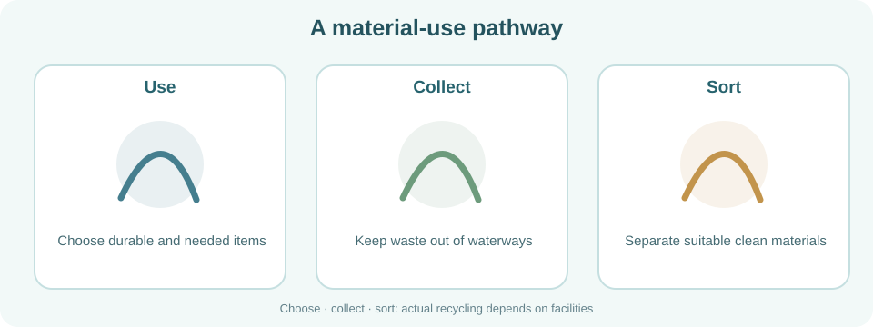
Reduce คือการลดการใช้สิ่งของที่ไม่จำเป็น Reuse คือการใช้สิ่งของเดิมซ้ำอย่างเหมาะสม ส่วน Recycle คือการนำวัสดุที่ใช้แล้วไปผ่านกระบวนการผลิตเป็นวัสดุหรือผลิตภัณฑ์ใหม่ การรีไซเคิลจริงต้องคำนึงถึงชนิดพลาสติก ความสะอาด และระบบรับคัดแยกในพื้นที่
ตัวอย่าง: นำขวดน้ำที่ใช้ซ้ำได้มาเติมน้ำเป็นการ Reuse; ไม่รับช้อนส้อมใช้ครั้งเดียวที่ไม่จำเป็นเป็น Reduce; ส่งขวด PET ที่คัดแยกและสะอาดเข้าสู่ระบบที่รับรีไซเคิลเป็น Recycle ทั้งนี้ผลิตภัณฑ์สำหรับใส่อาหารต้องใช้ตามข้อกำหนดความปลอดภัยของวัสดุนั้น
25(a). นักเรียนปฏิเสธหลอดใช้ครั้งเดียวที่ไม่จำเป็น ถือเป็น R ใด และช่วยลดขยะได้อย่างไร?
25(b). ทำไมการมีสัญลักษณ์พลาสติกบนภาชนะอย่างเดียวจึงยังไม่ยืนยันว่าที่บ้านรีไซเคิลได้จริง?
3. ย่อยสลายได้ ไม่เท่ากับหายไปเมื่อแตกเป็นชิ้นเล็ก
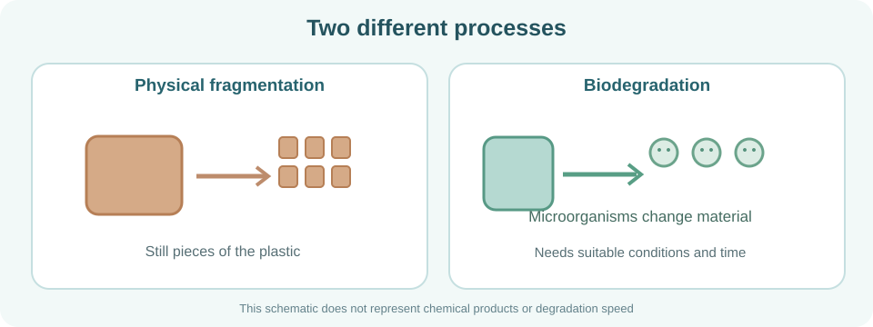
พลาสติกทั่วไปหลายชนิดย่อยสลายทางชีวภาพได้ยากและอาจคงอยู่ในสิ่งแวดล้อมนาน การแตกเป็นชิ้นเล็กไม่ได้พิสูจน์ว่าจุลินทรีย์ย่อยสลายวัสดุนั้นจนหมด ส่วนวัสดุที่ระบุว่า Biodegradable อาจย่อยสลายได้เมื่อมีจุลินทรีย์ อุณหภูมิ ความชื้น และเวลาเหมาะสม ซึ่งไม่จำเป็นต้องเกิดเร็วในทุกสภาพแวดล้อม
แตกเป็นชิ้นเล็ก (fragmentation) ไม่เท่ากับย่อยสลายทางชีวภาพ (biodegradation) และทั้งสองอย่างไม่ใช่การรีไซเคิล (recycling) ซึ่งต้องนำวัสดุเข้าสู่กระบวนการผลิต
26(a). ถุงพลาสติกเก่าขาดเป็นชิ้นเล็กจำนวนมาก แปลว่าย่อยสลายทางชีวภาพหมดแล้วหรือไม่?
26(b). เพราะเหตุใดพลาสติกที่ติดฉลากว่าย่อยสลายได้จึงไม่ควรทิ้งลงธรรมชาติ?
4. วิทยาศาสตร์เพิ่มเติม: พอลิเมอร์ในยาและจุลินทรีย์
Focus Smart Plus ยกตัวอย่างพอลิเมอร์ที่ย่อยสลายได้สำหรับห่อหุ้มยาบางชนิด ซึ่งออกแบบให้สารออกฤทธิ์ค่อย ๆ ปลดปล่อยตามการสลายหรือการเปลี่ยนแปลงของวัสดุ และยกข่าวเกี่ยวกับจุลินทรีย์ที่ย่อยพลาสติกบางชนิดได้ สิ่งนี้ไม่ได้หมายความว่าจุลินทรีย์ชนิดเดียวจะย่อยพลาสติกทุกชนิดได้รวดเร็ว
27. เหตุใดการพบจุลินทรีย์ที่ย่อยพลาสติกบางชนิดได้จึงยังไม่แก้ปัญหาขยะพลาสติกทุกชนิดทันที?
โครงสร้างและองค์ประกอบของพอลิเมอร์สัมพันธ์กับสมบัติ → เราจึงเลือกวัสดุตามหน้าที่ → และต้องรับผิดชอบต่อผลกระทบหลังใช้งานด้วย
กรณีตัวอย่างสิ่งแวดล้อมจากสื่อประกอบ
พิจารณา 4 กรณี: (1) ขยะอุดตันทางระบายน้ำ (2) ภาชนะทิ้งไว้จนมีน้ำขังซึ่งยุงอาจวางไข่ (3) การเผาพลาสติกกลางแจ้ง (4) วัสดุที่อ้างว่าย่อยสลายได้ แต่ต้องอาศัยสภาวะเหมาะสม การตัดสินใจที่ดีต้องพิจารณาชนิดวัสดุ ความเสี่ยง และทางเลือกจัดการที่มีจริงในพื้นที่
คำศัพท์วิทยาศาสตร์ที่ควรรู้ / Scientific Vocabulary
คลังศัพท์ L01–L08: เขียนความหมายก่อนเปิดเฉลย แล้วฝึกใช้ศัพท์กับภาพและสถานการณ์ใหม่ในใบทบทวน
| English | ความหมาย / คำอธิบาย |
|---|---|
| Material | วัสดุ |
| Product | ผลิตภัณฑ์ |
| Property | สมบัติ |
| Hardness | ความแข็ง |
| Elasticity | สภาพยืดหยุ่น |
| Conductor | ตัวนำไฟฟ้า |
| Insulator | ฉนวนไฟฟ้า |
| Monomer | มอนอเมอร์ |
| Polymer | พอลิเมอร์ |
| Polymerization | พอลิเมอไรเซชัน |
| Repeating unit | หน่วยซ้ำ |
| Chemical bond | พันธะเคมี |
| Natural polymer | พอลิเมอร์ธรรมชาติ |
| Synthetic polymer | พอลิเมอร์สังเคราะห์ |
| Homopolymer | พอลิเมอร์ที่เกิดจากมอนอเมอร์ชนิดเดียว |
| Copolymer | พอลิเมอร์ที่เกิดจากมอนอเมอร์ต่างชนิด |
| Linear polymer | พอลิเมอร์แบบเส้น |
| Branched polymer | พอลิเมอร์แบบกิ่ง |
| Cross-linked polymer | พอลิเมอร์แบบร่างแห / เชื่อมขวาง |
| Chain packing | การจัดเรียงตัวของสายโซ่พอลิเมอร์ |
| Density | ความหนาแน่น (มวลต่อปริมาตร) |
| HDPE | พอลิเอทิลีนความหนาแน่นสูง |
| LDPE | พอลิเอทิลีนความหนาแน่นต่ำ |
| SBR rubber | ยางสังเคราะห์สไตรีน–บิวทาไดอีน |
| Thermoplastic | เทอร์มอพลาสติก |
| Thermoset | เทอร์มอเซต |
| Soften | อ่อนตัว |
| Remould | ขึ้นรูปใหม่ |
| Cross-link | พันธะเชื่อมขวางระหว่างสายโซ่ |
| Durable | ทนทานต่อการใช้งาน |
| Lightweight | น้ำหนักเบา |
| Impermeable | ของเหลวหรือสารผ่านได้ยาก |
| Chemical-resistant | ทนต่อสารเคมีบางชนิด |
| PE | พอลิเอทิลีน |
| PP | พอลิโพรพิลีน |
| PVC | พอลิไวนิลคลอไรด์ |
| PS | พอลิสไตรีน |
| PTFE | พอลิเตตระฟลูออโรเอทิลีน |
| PET | พอลิเอทิลีนเทเรฟทาเลต |
| Melamine resin | เรซินเมลามีนฟอร์มาลดีไฮด์ |
| Plasticizer | สารเติมแต่งที่ช่วยให้พลาสติกอ่อนตัวหรือยืดหยุ่น |
| Rubber | ยาง; พอลิเมอร์ที่มักยืดหยุ่นได้ |
| Natural rubber | ยางธรรมชาติจากน้ำยางพืช |
| Synthetic rubber | ยางสังเคราะห์จากกระบวนการเคมี |
| Polyisoprene | พอลิเมอร์หลักในยางธรรมชาติ |
| Neoprene | ยางสังเคราะห์บางชนิดที่ทนน้ำมันและสภาพอากาศได้ดี |
| Vulcanisation | กระบวนการสร้างพันธะเชื่อมขวางในยาง |
| Fibre | วัสดุเส้นเล็กยาวสำหรับทำเส้นด้ายหรือผ้า |
| Natural fibre | เส้นใยที่มาจากพืชหรือสัตว์ |
| Regenerated fibre | เส้นใยแปรรูปจากสารธรรมชาติ เช่น เซลลูโลส |
| Synthetic fibre | เส้นใยจากพอลิเมอร์สังเคราะห์ |
| Nylon | ไนลอน; พอลิเมอร์สังเคราะห์ที่ใช้ทำเส้นใย |
| Rayon | เรยอน; เส้นใยจากเซลลูโลสแปรรูป |
| Cellulose acetate | เซลลูโลสแอซีเตต; เส้นใยกึ่งสังเคราะห์จากเซลลูโลสที่ปรับเปลี่ยนทางเคมี |
| Polyester | พอลิเอสเตอร์; กลุ่มพอลิเมอร์ใช้ทำเส้นใย |
| Reduce | ลดการใช้สิ่งของที่ไม่จำเป็น |
| Reuse | นำสิ่งของเดิมกลับมาใช้ซ้ำอย่างเหมาะสม |
| Recycle | นำวัสดุใช้แล้วมาผ่านกระบวนการผลิตใหม่ |
| Biodegradable | ย่อยสลายทางชีวภาพได้ภายใต้เงื่อนไขเหมาะสม |
| Fragmentation | การแตกของวัสดุเป็นชิ้นเล็ก |
| Microplastic | อนุภาคพลาสติกขนาดเล็กกว่า 5 มม. โดยทั่วไป |
| Pollution | มลพิษ; การปนเปื้อนที่ทำให้สิ่งแวดล้อมเสื่อมลง |
| Butadiene | บิวทาไดอีน |
| Polybutadiene (BR) | พอลิบิวทาไดอีน (ยาง BR) |
| Isoprene | ไอโซพรีน |
| Chloroprene | คลอโรพรีน |
| Bakelite | เบกาไลต์ (ฟีนอลฟอร์มาลดีไฮด์เรซิน) |
| Glycogen | ไกลโคเจน |
| Dacron / Terylene | ดาครอน / เทอรีลีน (ชื่อทางการค้าของพอลิเอสเตอร์) |
| Kapok | นุ่น |
| Jute / Hemp | ปอ / ป่าน |
| Starting material | สารตั้งต้น |
3.1 Polymers · Complete Learning Sheet L01–L08
L01–L08 | Products → molecules → properties → uses → environment
Observe • Explain • Write • RevealL01 · Everyday materials: Why choose different materials?
Look around you: a water bottle, an electrical wire, a shopping bag and a rubber band. Different materials are chosen because each product must perform a different job.
How can we test material properties?
Looking at a material may not tell us enough. We choose a test for the property we want to investigate and use the results as evidence.
| Property | How to investigate |
|---|---|
| Hardness | Use a specified object to scratch the surface and compare the marks. |
| Electrical conductivity | Place the sample in a simple battery-and-lamp circuit and observe the lamp. |
| Elasticity | Compare the length or shape before, during and after applying a force. |
| Toughness / brittleness | Observe deformation or fracture in a suitable teacher-supervised test. |
| Heat resistance | Compare how samples change under specified heating conditions. |
Use data or teacher demonstrations for heating and fracture tests. Do not burn plastics or inhale plastic fumes.
How do we draw conclusions from evidence?
If the lamp lights, current flows under those test conditions. If it stays dark, first check the circuit and the sensitivity of the equipment before drawing a conclusion.
Many polymer materials are electrical insulators, but not all. Some special polymers can conduct electricity. We will explore polymers next.
L02 · From building blocks to polymers
A plastic bag and a rubber band may have different properties, but their main materials are polymers. Let us zoom in to the molecular level to understand what that means.
Being close together is not the same as forming a polymer
To form a polymer chain, the units must be chemically linked. Simply placing many molecules next to one another does not form a polymer chain.
Must every monomer be of the same type?
Some polymers are made using one type of monomer. Others can be made from more than one type. We will classify them more carefully in L03.
The coloured circles are models, not the actual shapes or sizes of molecules. Chemical linking is the main idea.
L03 · How can polymers be classified?
We know that polymers contain many repeating units. To classify a polymer, we must first choose a criterion. Here we use two different criteria.
Classify by origin
Some polymers occur naturally, such as starch, cellulose, proteins and natural rubber. Others are manufactured, such as polyethylene (PE), nylon and synthetic rubber.
10(a). Classify starch, natural rubber, PE and nylon by origin.
10(b). Does “natural” always mean “easy to biodegrade”? Explain.
Classify by monomer types
Suppose A and B stand for different monomer types. Study models P and Q and decide how many monomer types each chain contains. These models are learning symbols, not chemical formulas.
11(a). Classify models P and Q as homopolymers or copolymers. Give visual evidence.
11(b). Why should classification by origin not be confused with classification by monomer type?
At this level, starch is a natural polymer and a homopolymer. SBR rubber is synthetic and a copolymer.
12. A student says, “All synthetic polymers are copolymers.” Evaluate and correct this claim.
More examples for the two classification criteria
Starch, cellulose and glycogen contain repeating glucose-derived units (treated here as homopolymers). Proteins contain different amino-acid residues, illustrating chains with more than one building-block type. Wool and silk contain protein polymers.
L04 · How does polymer structure affect properties?
Now we are not looking at origin or monomer types. Instead, we look at the shapes and connections of polymer chains. Structure is one of the factors that influences material properties.
13(a). Match I, II and III in Figure 7 to linear, branched and cross-linked structures.
13(b). Using Figure 7, what makes a branched structure different from a cross-linked one?
How does branching change chain packing?
Imagine packing ropes in a box. Many side pieces can make close packing harder. For polyethylene (PE), under otherwise comparable conditions, more branching generally makes close packing more difficult.
14(a). Which model, X or Y, has more branches, and which is likely to pack more closely? Explain.
How do HDPE and LDPE differ?
HDPE and LDPE are both polyethylene. They differ in branching and chain packing. In general, HDPE has less branching and packs more closely, so its density is higher than that of more-branched LDPE.
14(b). Under comparable conditions, which tends to be denser, HDPE or LDPE, and why?
Strength, elasticity and melting behaviour do not depend on branching alone. Monomers, chain length, crystallinity, additives and conditions also matter. Cross-links can restrict chain movement, but not every network must be brittle.
15(a). Why is it incorrect to say that every cross-linked polymer must be brittle?
15(b). Explain why a flexible plastic bag and a rigid moulded container might differ, linking structure to properties rather than colour.
Structure also influences how polymers behave when heated. Next, L05 compares thermoplastics and thermosets.
L05 · Can every plastic be melted and reshaped?
In L04 we saw that polymer chains pack and connect differently. Now ask what happens when a plastic is heated: does it soften, keep its shape or begin to degrade?
Thermoplastics
Thermoplastics generally soften when heated under suitable conditions and become firm again on cooling. They can be reshaped through suitable processing. They often have linear or branched chains; examples include PE, PP and PVC.
16(a). A polymer softens when heated and can be reshaped. What generally happens after it cools?
Thermosets
A thermoset has a cross-linked network. After curing, it cannot be melted and remoulded in the same way as a thermoplastic. Excessive heat may cause degradation instead. One example is melamine-formaldehyde resin in certain tableware.
16(b). Why cannot a heavily cross-linked polymer be reshaped by heating like a thermoplastic?
Compare the two types
| Feature | Thermoplastic | Thermoset |
|---|---|---|
| Typical structure | Linear or branched chains | Cross-linked network |
| When heated suitably | Generally softens; can be reshaped | Does not remelt for reshaping |
| Example | PE, PP, PVC | Melamine-formaldehyde resin |
17(a). Predict how melamine resin and PE differ in remoulding, and state a safety precaution.
Recycling also depends on sorting, cleanliness, additives and local recycling facilities. Being thermoplastic does not guarantee that every item is recycled locally.
17(b). A plastic bag softens with heat. Is it correct to conclude that it will definitely be recycled?
Other thermoset examples in the references
Bakelite (phenol-formaldehyde resin) is used in some electrical insulating components and handles. Certain cured silicone networks and thermosetting polyurethane formulations also form cross-linked networks. Do not classify every silicone or polyurethane formulation as a thermoset: their structures and uses vary.
L06 · How do we choose the right plastic?
A bottle, water pipe, crate, foam package and pan coating all contain plastics, but they need not use the same polymer. Choose by the properties the task requires.
Vocabulary for plastic properties
Useful words include durable, lightweight, electrical insulator, impermeable and chemical-resistant. Not every plastic has these properties to the same degree.
Important plastics and their applications
| Polymer | Properties and example uses |
|---|---|
| PE Polyethylene | Lightweight, durable, water-resistant and an electrical insulator; examples include bags and some bottles. |
| PP Polypropylene | Lightweight, durable and mouldable; used in crates, buckets and other products. |
| PVC Polyvinyl chloride | Used in pipes and cable insulation; can be rigid or flexible depending on additives. |
| PS Polystyrene | Solid PS can be relatively brittle; foamed PS is light and provides thermal insulation; used in packaging. |
| PTFE Polytetrafluoroethylene | Low-friction, non-stick and chemically resistant; used in some cookware coatings. |
| PET Polyethylene terephthalate | Light and suitably strong; used for drink bottles and polyester fibres. |
| MF Melamine-formaldehyde resin | A shape-retaining thermoset used in some tableware; follow manufacturers’ temperature limits. |
Do not memorize only 'name = object'. Ask which property makes the polymer suitable. For example, a pipe needs mechanical durability and water resistance; an electrical cable sheath needs poor electrical conductivity.
18(a). Why can PVC be used for both rigid pipes and flexible cable insulation?
18(b). What should you avoid assuming when comparing solid PS and PS foam?
Selecting a plastic from requirements
Select materials in four steps: (1) identify the product function, (2) list required properties, (3) compare candidate materials and limitations, and (4) justify the choice. Real applications may also require food-contact, temperature and product-standard checks.
19(a). For a non-stick cookware coating, what property is important and which polymer is one example?
19(b). Why is colour or price alone insufficient when choosing a drainpipe material and a drink-bottle material?
Polymer type suggests typical properties, but a finished product also depends on additives, shape, thickness, temperature and processing. Some specialty polymers can conduct electricity, so 'all plastics are always insulators' is incorrect.
20(a). Is this statement correct: “All plastics are electrical insulators and resist heat equally”?
Extension from Focus Some conducting polymers are being used or investigated in electronics and some battery technologies; the detailed electron mechanism is beyond this introductory lesson.
Plastics are not the only polymer products. L07 explores rubber and fibres with different properties and applications.
Reference table: monomers and everyday products
This table preserves the main examples from all three sources for open-book review. Learn how the polymer meets the job first; look up the starting molecules as needed rather than memorising every chemical name at once.
| Polymer | Monomer(s) or starting compounds (reveal) | Example products |
|---|---|---|
| PE · Polyethylene | ethene (ethylene) | cool-food bags, bin liners, toys, artificial flowers, shopping bags and some shampoo bottles |
| PP · Polypropylene | propene (propylene) | buckets, crates, plastic furniture and toys |
| PVC · Polyvinyl chloride | vinyl chloride (chloroethene) | water pipes, fittings, cable sheaths, raincoats, floor tiles and some chemical containers |
| PS · Polystyrene | styrene | clear cases, older media cases, refrigerator parts, packaging foam, thermal insulation panels and buoyant products |
| PTFE · Polytetrafluoroethylene | tetrafluoroethene (tetrafluoroethylene) | non-stick cookware coatings, electrical insulators, gaskets and suitable low-friction mechanical parts |
| PET · Polyethylene terephthalate | ethylene glycol with terephthalic acid or dimethyl terephthalate | water and soft-drink bottles, polyester fibres, threads, nets and fishing nets |
| MF · Melamine-formaldehyde resin | melamine and formaldehyde | plates, bowls, spoons, chopsticks and approved food-contact articles used as directed |
Remember: One polymer can make very different products depending on processing and additives: PET may form bottles or fibres, while solid and foamed PS look different. Product appearance alone does not prove polymer identity.
L07 · More than plastic: rubber and fibres
After studying plastics, compare a rubber band with a rope. A rubber band stretches and returns close to its original length. A load-bearing rope should be strong without stretching too far. Both may contain polymers, but they are selected for different properties.
1. Rubber and its important properties
Rubber is a polymer material that often stretches and recovers when the load stays within its elastic range. Elasticity is different from toughness or strength: elasticity describes recovery, while toughness concerns energy absorbed before fracture. Strength concerns the stress a material can withstand before failure.
Natural rubber comes from latex obtained from rubber trees; its main polymer is polyisoprene. Synthetic rubbers are made through chemical processes. Examples are styrene-butadiene rubber (SBR) and neoprene. Each has different properties depending on its formulation.
| Type | Origin / important property | Typical use |
|---|---|---|
| Natural rubber | Latex-derived; elastic | Bands and rubber goods |
| SBR | Synthetic rubber with useful abrasion resistance in suitable grades | Some tyre formulations |
| Neoprene | Synthetic rubber with useful resistance to certain oils and weathering | Some hoses and protective goods |
Not every synthetic rubber resists every oil, and not all rubbers have the same elasticity. Choice depends on rubber type, additives and actual service conditions.
Vulcanisation introduces cross-links in rubber to modify properties such as recovery and durability. More cross-links do not automatically make a rubber suitable for every use.
21(a). Why does a rubber band need elasticity while a lifting rope needs strength?
21(b). A friend claims that all synthetic rubber resists every oil. Is this correct?
2. Fibres: selecting materials for textiles and rope
A fibre is a long, thin material that can be spun into yarn or made into fabric. Natural fibres include cotton (rich in cellulose) and wool or silk (made of proteins).
Regenerated cellulosic fibres, such as rayon, are made by processing natural cellulose into new fibres. Cellulose acetate is another semi-synthetic fibre, produced by chemically modifying cellulose. Synthetic fibres, such as nylon and polyester, are made from synthetic polymers.
| Group | Examples | Key idea |
|---|---|---|
| Natural | cotton, wool, silk | from plants or animals |
| Regenerated cellulosic | rayon (e.g., viscose) | processed from natural cellulose |
| Synthetic | nylon, polyester | made from synthesised polymers |
Fibres vary in properties. Cotton often absorbs moisture well, while nylon can offer high tensile strength in many uses, including socks, ropes or some parachute fabrics as shown in Focus Smart Plus. Actual performance also depends on product design and conditions of use.
22(a). How would you classify cotton, rayon and nylon into three groups, and what criterion are you using?
22(b). Why is knowing that a material is a fibre not enough to choose a load-bearing rope?
23. Why are nylon and wool in different fibre groups even though both can make clothing?
Extended examples: natural and synthetic rubbers
| Rubber | Starting monomer(s) and useful properties | Example products |
|---|---|---|
| Natural rubber · Polyisoprene | isoprene; elastic under suitable conditions | rubber bands, medical gloves and suitably specified natural-rubber goods |
| BR · Polybutadiene | butadiene; contributes resilience and wear properties in some rubber compounds | some car and aircraft tyre formulations |
| SBR · Styrene-butadiene rubber | styrene and butadiene; useful wear properties in appropriate grades | some tyres, shoe soles and belts |
| Neoprene · Polychloroprene | chloroprene; resists certain oils and weathering in suitable grades | some hoses, protective sleeves and rubber toys |
More fibre examples by origin
| Group | Examples found in the teaching sources | Key point |
|---|---|---|
| Natural: plant fibres | Cotton, kapok, linen (flax), hemp and jute | Cellulose is an important component. |
| Natural: animal fibres | Sheep wool, goat hair and silk | Proteins are important components. |
| Semi-synthetic cellulose-based | Rayon and cellulose acetate | Made by processing or chemically modifying natural cellulose. |
| Synthetic fibres | Nylon (including nylon-6,6) and polyester, including Dacron/Terylene | Used in clothing, socks, ropes, nets or parachutes depending on their properties and design. |
Dacron and Terylene are trade names for polyester fibres, not separate polymer families. Rayon is produced from processed cellulose, unlike petroleum-derived nylon.
L08 · Use polymers responsibly and reduce environmental impacts
Many plastics are light, durable and easy to shape. These are useful properties during use, but discarded plastics can persist for a long time when waste is poorly managed. We need to consider both the benefit during use and what happens afterwards.
1. Impacts of poor waste management
Plastic waste entering drains can obstruct water flow, contribute to local flooding and pollute waterways. Discarded containers holding stagnant water can become mosquito breeding sites. Open burning of plastic waste may release smoke and harmful pollutants.
24(a). How can a discarded plastic container holding stagnant water become a health concern?
24(b). Why is open burning of plastic an inappropriate disposal method?
2. The 3Rs: Reduce, Reuse and Recycle
Reduce means avoiding unnecessary material use. Reuse means using an item again when appropriate. Recycle means processing used material into new material or products. Real recycling depends on plastic type, contamination and local collection and processing facilities.
Examples: refilling a suitable reusable bottle is Reuse; declining unnecessary single-use cutlery is Reduce; placing a clean, accepted PET bottle into a local recycling stream is Recycle. For food-contact products, follow material-specific safety guidance.
25(a). A student declines an unnecessary single-use straw. Which R is this, and how can it reduce waste?
25(b). Why does a plastic marking alone not prove that the container can be recycled locally?
3. Biodegradation is not the same as fragmentation
Many common plastics resist biodegradation and can persist in the environment. Breaking into smaller pieces does not prove that microbes have broken the material down. Materials labelled biodegradable may need suitable microorganisms, temperature, moisture and time; rapid breakdown is not guaranteed in every environment.
Fragmentation is not the same as biodegradation, and neither is recycling, which requires processing used material into new material or products.
26(a). A plastic bag breaks into many tiny pieces. Does this prove that it has fully biodegraded?
26(b). Why should a biodegradable-labelled plastic not be littered in nature?
4. Science extension: drug-delivery polymers and microbes
Focus Smart Plus gives examples of degradable polymers used in some controlled drug-delivery systems, where drugs can be released as the material changes or breaks down. It also mentions microorganisms able to break down certain plastics. This does not mean one microbe rapidly degrades every plastic.
27. Why does finding microbes that can degrade some plastics not immediately solve all plastic waste problems?
Polymer composition and structure influence properties → we choose materials for their purpose → we also take responsibility for what happens after use.
Environmental cases from the teaching sources
Consider four cases: (1) plastic waste blocking drains, (2) discarded containers holding water where mosquitoes may breed, (3) open burning of plastic waste, and (4) materials marketed as biodegradable that still need suitable conditions. Good decisions depend on the material, risk and local waste facilities.
Scientific Vocabulary / คำศัพท์วิทยาศาสตร์
L01–L08 word bank: write meanings before revealing, then use the vocabulary with new figures and scenarios in the review.
| English | Meaning / explanation |
|---|---|
| Material | a substance used to make something |
| Product | an object made for a purpose |
| Property | a characteristic of a material |
| Hardness | resistance to scratching or indentation |
| Elasticity | ability to return to original shape after force removal |
| Conductor | material that lets current pass readily |
| Insulator | material that lets very little current pass |
| Monomer | a molecule that can react to form a polymer |
| Polymer | a substance made of large molecules with many linked repeating units |
| Polymerization | chemical process of forming polymers from monomers |
| Repeating unit | a structural unit that repeats along a polymer chain |
| Chemical bond | an attraction holding atoms together |
| Natural polymer | a polymer that occurs in nature |
| Synthetic polymer | a polymer made by chemical synthesis |
| Homopolymer | a polymer formed from one monomer type |
| Copolymer | a polymer formed from two or more monomer types |
| Linear polymer | a polymer with mainly unbranched chains |
| Branched polymer | a polymer with side branches |
| Cross-linked polymer | a polymer with bridges between chains |
| Chain packing | how closely polymer chains are arranged |
| Density | mass per unit volume |
| HDPE | high-density polyethylene |
| LDPE | low-density polyethylene |
| SBR rubber | styrene-butadiene rubber, a synthetic copolymer |
| Thermoplastic | a plastic that can soften and be reshaped with suitable heating |
| Thermoset | a cured cross-linked plastic that cannot be remelted for reshaping |
| Soften | become softer |
| Remould | reshape using a mould or process |
| Cross-link | a bond bridging polymer chains |
| Durable | able to withstand expected use |
| Lightweight | having relatively low weight |
| Impermeable | resisting passage of a fluid or substance |
| Chemical-resistant | resistant to particular chemicals |
| PE | polyethylene |
| PP | polypropylene |
| PVC | polyvinyl chloride |
| PS | polystyrene |
| PTFE | polytetrafluoroethylene |
| PET | polyethylene terephthalate |
| Melamine resin | melamine-formaldehyde resin |
| Plasticizer | an additive that can make plastics softer or more flexible |
| Rubber | a material often capable of elastic stretching |
| Natural rubber | natural latex-derived rubber |
| Synthetic rubber | rubber manufactured by chemical processes |
| Polyisoprene | the main polymer in natural rubber |
| Neoprene | a synthetic rubber useful for resistance to some oils and weathering |
| Vulcanisation | process of introducing cross-links in rubber |
| Fibre | long, thin material used to make yarn or fabric |
| Natural fibre | fibre from plants or animals |
| Regenerated fibre | fibre processed from a natural material such as cellulose |
| Synthetic fibre | fibre made from synthetic polymers |
| Nylon | nylon; a synthetic polymer used for fibres |
| Rayon | rayon; a regenerated cellulosic fibre |
| Cellulose acetate | cellulose acetate; a semi-synthetic fibre made from chemically modified cellulose |
| Polyester | polyester; a polymer family used for fibres |
| Reduce | avoid unnecessary material use |
| Reuse | use an item again appropriately |
| Recycle | process used material into new material or products |
| Biodegradable | capable of microbial degradation under suitable conditions |
| Fragmentation | breaking a material into smaller pieces |
| Microplastic | plastic particle commonly defined as under 5 mm |
| Pollution | contamination that harms environmental quality |
| Butadiene | A starting monomer for polybutadiene and SBR |
| Polybutadiene (BR) | A synthetic rubber made from butadiene |
| Isoprene | The monomer used to make natural-rubber polyisoprene |
| Chloroprene | A monomer used to make neoprene |
| Bakelite | An example of a thermosetting phenolic resin |
| Glycogen | A natural polymer containing repeating glucose-derived units |
| Dacron / Terylene | Trade names for polyester fibres |
| Kapok | A natural plant fibre |
| Jute / Hemp | Examples of natural plant fibres |
| Starting material | A substance used to make a polymer |